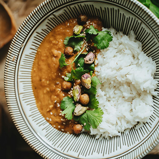

Poulet au curry




30 min | 40 min | 4 personnes
Détails
Préparez un délicieux poulet au curry, parfumé et savoureux, parfait pour un repas convivial.
Ingrédients
- 450 g de blancs de poulet
- 1 oignon
- 1 gousse d'ail
- 1 c. à soupe de curry en poudre
- 1 c. à café de gingembre râpé
- 20 cl de lait de coco
- Huile de cuisson
- Sel, poivre
- Coriandre fraîche
- Riz basmati
Étapes
- Émincez l’oignon, hachez l’ail, râpez ou hachez le gingembre, et découpez le poulet en morceaux de taille égale.
- Dans une grande poêle ou une cocotte, faites chauffer un peu d’huile. Ajoutez l’oignon et faites revenir jusqu’à ce qu’il soit translucide. Ajoutez ensuite l’ail et le gingembre, et faites revenir 1 à 2 minutes de plus.
- Ajoutez les morceaux de poulet dans la poêle et faites-les dorer de tous les côtés.
- Incorporez le curry en poudre et le lait de coco. Mélangez bien pour enrober toute la viande. Couvrez et laissez mijoter 20 minutes.
- Ajoutez du sel et du poivre selon votre goût. Parsemez de coriandre fraîche juste avant de servir.
- Servez avec du riz basmati chaud.